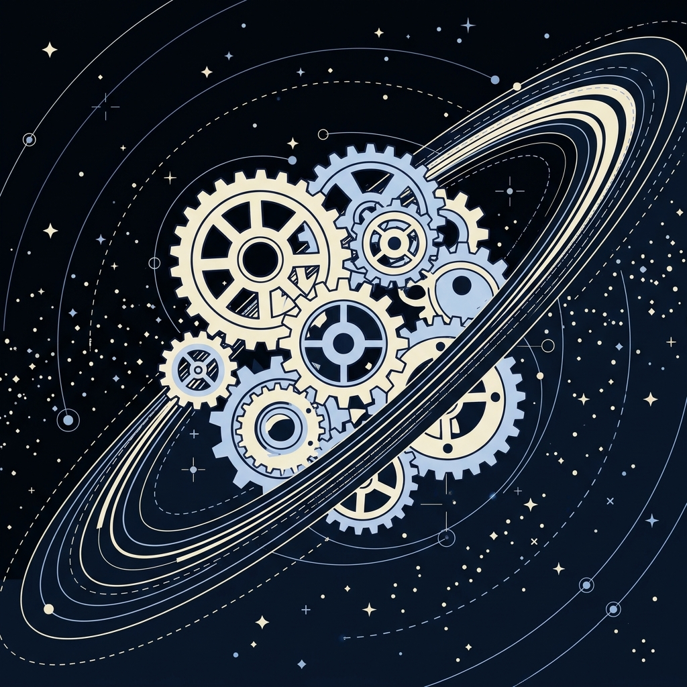

Guest sessions and workshops led by PROMYS scholars and International Olympiad medalists in astronomy.
Among Celesta's early initiatives were guest sessions with students and young researchers who have experience in advanced astronomy programs and competitions. They included PROMYS scholars and medalists from the International Olympiad on Astronomy and Astrophysics.
The sessions gave students a look at paths in astronomy that are often hard to reach through school activities. They also set an early direction for Celesta: connecting students with people who are actively involved in astronomy, research, mathematical problem-solving and advanced STEM programs.